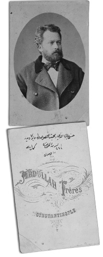

V
Garbcılar, İslâmcılar ve Hukuk Reformları
Batılılaşmanın getirdiği progress, yani ilerleme kavramı ve ideali ve onun etrafında meydana gelen ideolojik kutuplaşma son yüz elli senenin temel olayıdır. Her şeyden evvel de Osmanlı İmparatorluğu’nun Batı Avrupa ile olan temasları çok önemli bir yapısal değişiklik geçirmektedir. Bir İslâm devleti, bir İslâm toplumu ilk defa olarak Batı hukuk normları ile iç içe geçmektedir. Bunun üzerinde çok durulması lâzımdır. Türk inkılâbı teknik eğitime daha eskiden başladığı için olsa gerek, mühendislik konusunda nihaî başarıya ulaşmıştır. Türk inkılâbı tababet konusunda da nihaî başarıya ulaşmıştır. Bugün Türkiye mühendislik ülkelerinden birisidir, çok yakında da tababet, hekimlik ülkelerinden birisi haline gelecektir. Fakat Türk inkılâbı; hukukçuluk, hukukşinaslık dalında yeterince parlak, başarılı bir icraat gösterememiştir ve bugüne kadar hukuk inkılâbımız tamamlanmamıştır. Gerçi bunu hukukçulara söylediğiniz zaman reddederler; ama benzer dallarda da böyle bir eksiklik söz konusudur, bunlardan biri de Türk inkılâbının, Türk toplumunun değişmesinin edebiyat sahasında kendini ifade edememesidir. Dahası Türk inkılâbı içtimaî ilimler ve tarih sahasında kendisini tamamlayamamıştır. Türkiye, finans sahasında birtakım bürokratlar, birtakım uzmanlar yetiştirmiş olabilir ama, bu demek değildir ki, Türk inkılâbı iktisat ilmi sahasında kendini tamamlamıştır! O sahada da tamamlamamıştır.
Bunların hepsinin nedeni vardır. Yukarıda da arz ettiğimiz gibi, 1699 Karlofça, 1718 Pasarofça ve müteakib antlaşmalar yanında, bilhassa devlet başkanını; yani Osmanlı hükümdarını hilâfet makamı ile, âdeta ruhânî bir makamla tavsif eden 1774 Küçük Kaynarca Antlaşması’yla birlikte, Osmanlı İmparatorluğu devletlerarası hukuk ilişkilerine girmektedir ve bu hukuk ilişkileri çok kimsenin bizde takdim ettiği gibi, Hıristiyan hukuku değildir; çünkü Türkiye’de böyle bir yanlış yorumlama vardır. Bu yanlışı sağ denen, İslâmcı denen birtakım çevreler gibi kendisini çok Atatürkçü, solcu, ilerici zanneden zümreler de tekrarlamaktadırlar; çünkü Türkiye’de tefekkür erbabı, tarihçiler ve toplum bilimciler hukuk, bilhassa Roma hukuku bilmezler. Roma hukuku dediğimiz dal, bugün bizim hukuk fakültelerimizde kerhen okutulmaktadır. Ellerine fırsat geçse kaldırırlar ve bazı hukuk hocaları da Roma hukukunun eski bir hukuk olduğunu, hukukun değişiklikler geçirdiğini ileri sürmektedirler. Bu da safdil bir ifadedir; hukuk düşüncesini, hukuk ilmini; fizik, mühendislik gibi, belki bir yerde müzik gibi, böyle çok değişen ve ilerleyen tekniklere dayanan bir şey zannediyorlar ki çok yanılıyorlar.
Hukuk, belirli, ebedî normlara dayanan bir bilimdir. Durgunluğu içinde zenginliği vardır. Kanunları değiştirebilirsiniz; fakat esasında bütün ilkeler (principia), kurumlar (institutiones) aynı kalmaktadır. Dolayısıyla, üçüncü asırdaki Romalı hukukçu Ulpianus’u veya haleflerinden Tribonianus’u getirseniz ve Viyana’nın ünlü hukukçusu, bu asrın ünlü hukukçusu Kelsen’le birlikte kendisine bir anonim şirket problemi tevdi etsenizve şayet Ulpianus ve Tribonianus üstadlar, bunu daha iyi çözerlerse, şaşmayın. Dolayısıyla, hukukta o anlamda bir ilerleme yoktur. Hukuk, kendi durağanlığı içinde zenginliği olan, prensiplerinin ve kurumlarının yeni yorumuyla ve ictihadlarla gelişen bir ilimdir. Elbette ki hayata uyma olayı vardır; fakat hukukçuluk kendi mantığını önde tutan bir disiplindir.
Tarihyazımında da benzer bir karakter vardır; yani hiçbir zaman bazılarının zannettiği gibi, 20. yüzyılın tarihçileri Yunanlı tarihçilerden veya Arap tarihçi İbni Haldun’dan veya İdrisî’den, yöntem olarak da, üslûp olarak da, bilgi olarak da daha büyük adamlar değillerdir. Bunun üzerinde durmanız gerekir; bu çok önemli bir noktadır. Dolayısıyla bizde insanlar, maalesef hukukun ne olduğunu anlamadıkları için –bazı hocalarımız bile Roma hukuku için böyle bir yorum yaptığına göre– hukuk inkılâbının ne olduğu da bizde tam anlaşılmamıştır. Hukukçuluk itibariyle Romanist hukuk sistemi ne Hıristiyandır ne Müslümandır. Elbette ki Hıristiyanları ve Müslümanları etkilemiştir. Bizim Müslüman fakîhleri, Roma hukukunun kıyas teknikleriyle iş görürler. Onlar da Roma hukukçusudur. Hıristiyanlar da Roma hukukçusudur. Âdeta zamanımızın Roma hukukçusu A. Ruiz’in deyişiyle: “Volendo e non volendo, sapendo e non sapendo; siamo tutti Romanisti...” Yani istesek de istemesek de, bilsek de bilmesek de hepimiz Roma hukukçusuyuz... Dolayısıyla Hıristiyan cemaat mensubu ve Hıristiyan olan insanlar, Roma hukukçusu olmuşlardır; ama Roma hukukunun Hıristiyanlaşmak gibi bir vasfı yoktur; bu mümkün değildir. Aksi ifade “Zeytinyağının içine su katınca, su zeytinyağı olur” lâfı kadar abestir.
Hakikaten, büyük hukuk devrimi Batı’da, bilhassa geç ortaçağ ve Rönesans’ta Roma hukuk kurumlarının ve prensiplerinin hayata tatbikiyle gelişmiştir. Bu gelişme dolayısıyla ilk önce devletlerarası hukukta yeni kurumların, yeni teamüllerin ortaya çıktığını görürüz ve bu giderek kısa bir zamanda Avrupa’nın ortasında bulunan bir başka kuvvetle –bu kuvvet Müslüman da olsa hiç fark etmez– iç içe geçmiştir; fringe dediğimiz tabiri çevirip kullanalım, âdeta aralarında bir saçaklanma meydana gelmiştir; yani devletler hukuku ve ticaret bakımından, birtakım ilişkiler bakımından, antlaşmalardaki müeyyideler ve yeni getirdiğimiz müesseseler bakımından, Avrupa hayatıyla hukukî alanda iç içe geçmeye başlamışız ve bu, sanıldığı kadar da büyük problemler yaratmamaktadır. Bizde gene çok kesin bir şekilde; fakat doğru olmayarak ortaya konan bir kanaati, bu nedenle ihtiyatla karşılayalım: “Efendim İslâm hukukçusu bunu anlamaz, bilmez!” Hiç de öyle değildir; medresenin hukuk öğretimi, fıkıh öğretimi, kıyas teknikleri, yorum teknikleri bir Romalı hukukçununkinden farklı değildir; çünkü zaten MS 7. asırdaki, MS 8. asırdaki, MS 9.-10. asırlardaki büyük İslâm hukukçuları da bir tür Roma hukukçularıdır. Kullandıkları teknik ve muhakeme esası itibariyle aynıdır. Bizde, Batı hukukunun kabulünde doğan güçlükler; hukukçularımızın İslâm hukukçusu olmasından değil, lâyıkıyla hukukçu olmamasından, yani doğrudan doğruya hukuk eğitiminin çok kötü ve düşük düzeyinden ileri gelmektedir. İşte bu açığı kapatamadığımız; yani eğitimi düzeltmediğimiz sürece problemler büyüyecektir. Ama başarılı örnekler ve şahıslar var ve bu nedenle, kapatacağımızı ümit ediyoruz. Dolayısıyla, 19. yüzyılda aile hukukunun dışında hemen hemen hukukun her alanında Batı ile bir içleşme meydana gelmektedir. Sadece ukubat dediğimiz ceza hukuku sahasında Fransız Ceza Kanunnamesi’ni kabul ettiğimiz halde, İslâm mevzuatı ve prensipleri de yürürlükte kalmaktadır; yani, köylünün biri diğerini öldürüyor; maktulün mirasçısı isterse İslâm hukukuna göre diyet ödenir; veya ceza kanunnamesine göre kaatil hapse atılır ve kanun ne emrediyorsa bu cezaya hükmedilmesi gerekir. Fakat, ceza kanunnamesinin kamu görevlilerinin suçlarına ilişkin hükümleri, devlet memurları ve kamu hizmeti görenler için âmir hükümlerdir, mutlaka tatbik edilmiştir. O demektir ki burada artık ukubat sistemi uygulanmıyor, büyük ölçüde tard, hapis gibi cezalar göze çarpıyor ve dolayısıyla, 19. yüzyılda da siyaseten katl dediğimiz memurun idamı geniş ölçüde –geniş ölçüde değil hemen hemen tamamen– ortadan kalkmıştır. Bildiğiniz gibi icraatından dolayı siyaseten katl cezasına uğrayan adam yoktur. Gerçi Midhat Paşa idama mahkûm edilmiş; fakat bu hüküm sürgüne ve hapse tebdil edilmiştir. Kendisi, dedikodulara göre (bunlar doğru da olabilir) Taif’te katledilmiştir; ama takdir edersiniz ki, bu gizli suikast, bu gizli katl, hiçbir şekilde bir yargı hükmü olarak, bir mahkeme kararı olarak infaz edilmiş değildir. O takdirde rahatça, imparatorluğun son asrında siyaseten katl cezası ortadan kaldırılmıştır diyebiliriz. İşte bu açıdan baktığımız zaman, Osmanlı İmparatorluğu, idam cezasının geniş ölçüde tatbikten kalktığı, münhasıran adî suçlara hasredildiği, kanun üstünlüğü olan bir kanun devletidir. Almancada kanun devleti ters bir kelimedir (Polizeistaat–polis devleti denir) ama bu tabirle falaka devleti değil kanunun hükmettiği, güvenin bulunduğu bir memleket kastedilir. Osmanlı İmparatorluğu bir kanun devleti, bir hukuk devleti olarak ömrünü tamamlıyor. Şimdi bana: “Sosyalist parti kurulmuyormuş (aslında kuruldu); laiklikten bahsetmek yasakmış (bahsedildi de); toplantı, gösteri, yürüyüş kanunu yokmuş” demeyin. Modern zamanların katılma hakları dediğimiz bu mevzuatı, ayrı bir fasıldır.
Modernleşen devlette vatandaştan, kanunsuz, miktarı belirsiz vergi alınmaz, işkence olmaz, devlet hukuk dışına çıkarak adam öldürmez vs... Bunların temin edildiği devlet, kanun devletidir. İşte, son asır Osmanlı Devleti bu alanda büyük adımlar atmıştır ve aile hukuku hariç, hukukun Romanizasyonu süreci de ilerlemiş; yani ceza, ticaret, idare hukuku alanlarında tamamıyla Avrupa sistemi bu memleketin içine girmiştir ve arz ettiğim gibi, bizatihi medrese takımı; yani ulema takımı, yeni kurdukları hukuk medresesiyle (Medresetü’l-Kuzât) Avrupa hukukunu tanımaya başlamıştır. Programa baktığınız zaman da Avrupa hukuku müfredatın yarısı ve hatta yarıdan fazlasıdır; çünkü ulema, artık böyle bir imparatorlukta “naibü’ş-şer’i” dediğimiz memuriyete intisap edecek veya nizamiye mahkemelerine gireceklerdir. Hukukta bir ikilem başlamıştır; bütün dinî cemaatler için bu böyledir. Gidiyorsunuz papazın veyahut hahamın yanında, kendi hukukunuza göre evleniyorsunuz, boşanıyorsunuz, birtakım cezalar veriyorsunuz. Ondan sonra gelip Nizamiye Mahkemesi’nde ticarî davalarınızı hallediyorsunuz. Bu bütün cemaatler için böyle. Yani, Osmanlı tebaası hayatın çok önemli bölümünde eskinin aksine aynı mahkemeyi kullanıyor. Evlenip boşanmaya kalktı mı, herkes kendi hücresine gidiyor. Böylece, düalist yapılı bir hukuk sistemi, böylesine ikili yaşam süren bir cemiyet ortaya çıkarmıştır ve bunun çözümü, hepinizin bildiği gibi 1926’da Kanun-ı Medenî’nin kabulüyle mümkün olmuştur. 1926 devrimiyle, şahsın hukuku da İsviçre mevzuatına göre düzenlenerek Türkiye devleti hukuku tam anlamıyla Romanize etmiştir; ama bu demek değil ki bazılarının söylediği gibi, ruhumuza ve cemiyetimize tamamen aykırı bir sisteme girmişizdir. Hayır, birtakım çatışma noktaları bulunmasına rağmen, Medenî Kanun’umuzda da eski hukukumuzun birtakım müesseselerinin devam ettiği bir gerçektir. Nitekim Pakistanlı din bilgini ve asrın müctehidlerinden Fazlurrahman: “Medenî Kanun çok radikal bir ictihaddır, ama o da ictihaddır” diye uzlaştırıcı bir yorum ve değerlendirme yapmıştı. Medenî Kanun’da eski gelenek ve eski hukuktan esintilerde Cevdet Paşa gibi mütebahhir hukukçuların geçen asırdaki faaliyeti ve bıraktıkları mirasın da payı vardır.,

Namık Kemal (1840-1888). Fotoğrafın arkasında Namık Kemal’in el yazısıyla:
“Hüsnü Beyefendiye muhabbeti mahsusamla yadigârımdır.
28 teşrinisani 300 (11 Aralık 1884) Kemal Rodosdan”.
(Haluk Oral arşivi).
Parlamenter bir sistemden söz ettiğimizde ortaya Anayasa kurumu çıkmaktadır. Anayasa, İslâm devletinde görülecek bir tatbikat değildir. Roma devletinde de İslâm devletinde de Anayasa olmaz. Anayasa hepinizin bildiği gibi, Fransız İhtilâli’nin getirdiği bir yazılı belgedir, lâkin müessesenin kendisi Fransız İhtilâli ile ilgili değildir; çünkü anayasal sistemden bahsettiğiniz zaman, İngiliz hukukunun gelişmesini göz önüne almanız gerekir. İngiliz Parlamento binasına ve Paris’te Mebuslar Meclisi’ne veya Lüksemburg Parkı kıyısındaki Senato’ya baktığınız zaman, iki camianın binaları arasında önemli fark görülür. İngiliz, ortaçağdan kalma bir kilisenin içine girmiştir. Kilisenin iç dekorasyonu bile, asırdan asra ancak fark eden son derece muhafazakâr bir yapıdadır ve başkanın arkasında bir Athena Pallas heykeli veya terazili bir adalet tanrıçası, Nemesis heykeli yoktur. Ne de duvarlarda “égalité, fraternité” gibi sloganlar yer alır. Britanya Meclisi, bir köy kurulu odası gibi asırların içinde az değişen ama önemli şeylerin konuşulduğu, tartışıldığı, en zengin tarihli meclistir. Tartışma ve oturum usulleri çokluk yazısızdır, âdet mesabesindedir. Bernard Lewis ve Ercüment Kuran’dan iki alıntının mukayesesini yapalım; bir Hint Müslümanı olan Mirza Abu Talib Han (Özbek asıllı) 19. asrın başında parlamentoyu gezdiğinde şu ifadeyi kullanıyor: “Bunlar” diyor, “Kanunlarını burada yaparlar”; kanun yapılan yer onu pek etkilememiş. “Fakat” diyor, “bu nedenle, Allah’ın kanunları yerine kendileri kanun yapmak gibi acınacak bir iş yapıyorlar.” Aynı asrın ortasında Osmanlı sefiri Sadık Rıfat Paşa ise: “Hükümdarın şeriat-ı ğarraya değil, hukuk-ı millete tâbi olması gerektiğinden” söz ediyor. Bu ilginç bir evrimdir.34Öte yandan Ahmed Cevdet Paşa şeriatın gereğini bir Batılı üslûbuyla savunur. Cevdet Paşa’ya göre: “İslâm devletinin anayasası fıkıhtır”, ama fıkıh bir metin değildir, kodifikasyon yoktur (derlenmemiş) ve söz konusu da değildir. Vahiyin derece derece yorumlanması ve bir ictihada gidiş söz konusudur. 19. yüzyıl bunu yapıyor. Fıkıh dediği, görüşler ve ictihadlar bütünüdür ve devamlı ictihad mümkündür. Cevdet Paşa’nın anayasa görüşü, yazılı anayasayı seven Fransız sistemine ters; ama Anglosaksonlara yakındır; çünkü Britanya anayasası yoktur. Britanya anayasal sistemi ise birtakım teamüllerle, kurallarla (hatta yazısız kanunlar da yazılılar kadar makbul olduğu için, bunları yazmadan) oluşmuştur. Bunlar anayasal müesseseler olup yazısı ve çizisi bile söz konusu değildir. Yani, Avam Kamarası’nın mensupları 17. asırda İngiltere kralını parlamentoda istememek saygısızlığını (!) gösterdikleri için sadece bir söz var ortada, o andan itibaren İngiliz kralları Avam Kamarası’ndan içeri adım atmazlar. Parlamentoya geldikleri zaman, Lordlar Kamarası’na giderler ve usul icabı, avam takımı; yani mebuslar, halk mebusları “hoşgeldiniz” demeye oraya giderler. Bu keyfiyet kuşkusuz, bu kadar basit bir protokolden ibaret değildir. Cümlenin malûmu olduğu gibi avam takımının tartışmalarına ve kararlarına, İngiliz hükümdarlarının müdahaleden uzak kalması demektir. Bu kadar büyük bir idarî prensip ve kurum, böyle küçük bir hareketle, tavırla ifade edilmekte ve sadece âdetten ibaret gibi görünmektedir; yani benim büyüğümü gördüğüm zaman şapkamı çıkarmam, yaşlı bir büyüğün önünde eğilmem gibi bir âdetle ifade edilmektedir. Ardında yatan ise, zorla elde edilen bir usul, bir anayasal müessesedir. Yazılı bin tane anayasadan daha sağlamdır.
Dikkat ederseniz, Fransız demokrasisinin şıklığı ve sloganları bütün milletler için çekicidir; ama sakin Anglosakson demokrasisi kadar sağlam ve kalıcı ürünleri olmamıştır. Fransa’nın kendisi tarihte beş kere anayasasını tadil etmek zorunda kalan bir memlekettir. Üstelik bu tadilâtı da Amerikalılar gibi sessizce yapıp maddeler halinde mevcut anayasanın arkasına eklemekten çok hepsini değiştirip, bir de gürültüyle cumhuriyetleri numaralıyorlar: “Birinci Cumhuriyet, İkinci Cumhuriyet, Beşinci Cumhuriyet” diye. Bizim meraklılar da: “Biz de numaralarız” diyorlar. Oysa hukukî nizam ve refaha, cumhuriyetleri numaralamakla değil, İngilizlerin tarihte yaptığı gibi sessizce (bazen gürültüyle), ama değişiklikleri, yapıyı temelinden değiştirerek ulaşılır. Rus Çarı kabineye başkanlık ederdi. İngiltere kralları niye etmiyor? Aslında ediyorlardı. Gayet güzel bir seçimle Hannover hanedanından iki kral getirmişler. Hannover dukaları olan baba-oğul, iki adet George İngilizce bilmiyor. Belki de bilmedikleri için getirildiler. Öğrenmediler de... Öğrenmedikleri gibi kabine toplantılarına da girmediler. İngilizcenin, bilmeyen bir insan için dinlemesi ne kadar sıkıcı bir lisan olduğu malûm hatta, tahammül edilecek iş değildir. Bu nedenle her iki George da kabine toplantılarına girmemişler, girmeyince de kabine müessesesi bağımsızlaşmış. Hukuk düşüncesi ve yorumu bir örgüdür.
Osmanlı hilâfeti de uygulama ve âdetlerle gelişen bir kurumdur. Halifenin, bütün Müslümanların ruhânî (!) lideri olduğu mitosu âdeta, “Nasılsa ecnebî devletler böyle bir şeye inanıyor” diye desteklenmiş, beslenmiştir. Padişah-halife bizim tebaamız olmayan Müslümanın da ruhânî lideridir. Rusya’daki, Cava’daki, Hindistan’daki her işe karışır düsturu benimsenmiş; o kadar ki Cava’dan gelen çocukları okutup bir de onlara Osmanlı vatandaşlığı veriliyor; yani bugünkü Endonezya’da Osmanlı pasaportlu bir koloni oluşuyor.35Sonra genç adam oraya döndüğü zaman, Osmanlı uyruklu olarak (bugünkü Avrupa Birliği vatandaşı gibi; çünkü biz 1856 Paris Barışı’ndan beri Avrupa üyesiyiz) ayrıcalıklı bir statüyle dokunulmazlık kazanıyor. Meselâ, Hollanda idaresi dokunamıyor adama. Biraz siyasî faaliyet gösterse, pek mâni olamıyor. Hemen konsoloslarımız çıkıyor, adamı himaye ediyor; kapitülasyon hakları herkes için geçerli, kullanabilirsen. Batılılaşma, Batı’nın müesseselerinin alınması İslâmî ictihadla ve kurumlarla izah edilmeye çalışılmış. Namık Kemal, Cemaleddin Afgani, Raşid Rida bunu yapıyor.
Birtakım insanlar demişlerdir ki: “İslâmda meşveret kaidesi vardır, bu parlamentonun ta kendisidir.” Lâkin, sorsan desen ki, “Tamam, meşveret var, danışacaksın da ama imam senin kararına uymak zorunda değil; çünkü imamın bir de müstebit diktatör tarafı var.” Diktatör, müstebit olmak ayıp değil biliyorsunuz; yani Romalılar diktatörü pejoratif, tahkir edici bir kelime olarak kullanmaz. Tam aksine, kuvvetli bir konsül, olağanüstü durumlarda diktatör tayin edilir senato tarafından (Senatus Antonium dictatorem dixit). Bunun gibi müstebit de İslâm’da aşağılayıcı bir kelime değildir, tek başına idare edebilme müsbet bir vasıftır. Bu kelimeyi tahkirane biçimde kullananlar Jön Türklerdir. Nitekim, ha’l fetvasında Şeyhülislâm Mehmed Ziyaüddin Efendi, II. Abdülhamid için “müstebit” sözünü kullanmamıştır; çünkü İslâm hukuku açısından bu söz geçersizdir. Bunlara şunun için değiniyoruz: Yukarıda sözünü ettiğimiz gibi, yeni bir yorumlama yöntemi başlamıştır ve parlamento dahi böyle kurulmuştur; ama İslâm’ın meşveret kurumunda gayrimüslimler ne arıyor? Osmanlı parlamentosunun üçte biri gayrimüslim. Gayritürklük daha yüksek oranda da, üçte biri gerçekten gayrimüslim. Bu çok ilginç bir yapı. 1905’te Çarlık Rusyası parlamentoyu açtı; Duma mebusları içinde sadece iki Müslüman mebus vardı, biri Kırım’dan gelme Müftüzadelerden, öbürü Sadri Maksudi (Arsal) –o zaman çok genç bir adamdı; Kazan milletvekili olarak Rusya Duması’na girmişti. Yahudiler Rusya’da çok kalabalık bir kitle oldukları halde, Yahudi yoktu. Avusturya parlamentosunda ise, Müslüman yok; ama asıl önemlisi, Yahudi mebusu da yok. Oysa onlar da kalabalık bir kitleydi. Demek ki Osmanlı İmparatorluğu etnik dinî kompozisyon olarak çağdaş birtakım devletlerden daha renkli bir parlamentoya sahip olmuştur. Burada da demek “meşveret” kurul ve kurumu yeni bir yoruma tâbi tutulmuş, gayrimüslimler meşveret faaliyetine dahil ediliyor. Mecliste gayrimüslim ve Arap mebuslar bazı taleplerde de bulunmuştur. “Biz mebus seçilmek için Türkçe öğrenmek zorunda mıyız?” diyorlar. “Niye şart olsun?” diyorlar. Ahmed Vefik Paşa’nın Suriye mebuslarına ilginç ve despot bir cevabı var: “Türkçe bilmiyorsanız, aklınız varsa gelecek dört yıla kadar öğrenirsiniz” diyor. Ama dikkat ederseniz, renklilik hâkimdir ve bu renkliliğin üstünde bir özellik dikkatimizi çekmektedir. Burada Batı’daki gibi sınıfsal çatışmalar yoktur. Demek ki Türk inkılâbının bir özelliği 150 yıl boyunca, hiçbir şekilde inkılâp kavgaları ile sınıfsal kavga paralel olarak gitmemiştir; yani işçi sınıfıyla işveren sınıfı, toprak sahibiyle topraksız köylüler sınıfının çatışması gibi bir muhtevaya rastlanmıyor. Bu çok ilginç bir yapılaşmadır ve bazı Balkan eyaletleri hariç hemen bütün Osmanlı’da yaygındır. Aşağı yukarı Bulgaristan hariç Yunanistan’da bile, sınıfsal bir politika izlemek, bağımsızlıktan sonra ortaya çıkan bir olaydır ve çok geç devirlerde dahi Osmanlı’dan ayrılan ülkelerde, partiler mutlaka sınıf esası üzerinde kurulmuş ve kavgalarını öyle yürütmüş değillerdir. Bu açık bir özelliktir. Bunu ilk Osmanlı parlamentosunda da (1877), İkinci Meşrutiyet’te de görüyorsunuz. Demek ki burada gene bütün etnik dinî ayrımlara rağmen, bir Osmanlılık ruhu vardır. Bu imparatorluğun getirdiği, bürokrat takımına verdiği bir Osmanlı ruhudur, Osmanlı seçkinlerinden söz etmek kavram olarak yanlış değildir.
Konuyu toparlayacak olursak: 1875 yılının bir kış günü, Namık Kemal’in Vatan yahut Silistre başlıklı piyesi oynuyor millet sokaklara dökülüyor: “Vatan, millet, hürriyet” diye bağırıyor. Zaptiye üstlerine yürüyüp, ne istiyorsunuz deyince, “Allah Murad’ımızı versin” diyorlar. Sultan Abdülaziz’e karşı veliaht şehzade Murad Efendi’nin saltanatının yaklaşmakta olduğunu haber veren bir olay. Şimdi bu piyesin başlığından başlayarak, bütün kullanılan replik ve diyaloglardaki kavramlara baktığınız zaman, bir şeylerin değişmekte olduğunu görüyorsunuz. Şark’ta birtakım kelimeler vardır: Cumhuriyet. Hani Azerîler, “biz Respublika, siz de cumhuriyet dersiniz” diyorlar, sanki “cumhuriyet Türkçe mi?” diyorlar. Evet, cumhuriyet Türkçedir, niye Türkçedir? Çünkü cumhuriyetin kökü “cumhur”, cemaat anlamında, “people” anlamında, “congregation” anlamında bir Arapça kelimedir; ama o kelimeden cumhuriyeti ve cumhuriyet rejimini türeten Türklerdir. Binaenaleyh mefhumun içeriği tamamıyla Türkler tarafından doldurulduğu için bu çok Türkçe bir kelimedir, öbür Şark halklarına da buradan geçmiştir. Nitekim bunun tam karşılığı respublika’dır. Bu anlamda kullanırlar, Türkler bu kelimeyi 19. yüzyılda çağdaş cumhuriyeti ifade için bulmuşlardır.
Sonra, “Vatan yahut Silistre” diyor. Oradaki vatan Arapça bir kelimedir görünüşte. Eski Araba, “Bu nedir?” diye sorduğun zaman, “Vatan” der, “evimdir, yerimdir, gençliğimdir.” Şiir yazar ortaçağ Arabı. Ah vatanım, ey vatanım, yani ey gençliğim diye. Buradaki vatanın hiçbir şekilde İtalyanların patria, Fransızların patrie dedikleri anlamdaki bizim bugün kullandığımız vatanla eş olmadığı açıktır. Bunu böyle “vatan” yapanlar, Türklerdir. Namık Kemal’in kendisi Osmanlı vatanı, hatta İslâm vatanı diye büyük bir vatandan söz ediyor. Bu Türkçe bir kelimedir. Bunu göreceksiniz, tarihte de görülmüştür, halen de görülür. Araplar buradan almışlardır, bugün vatan sözünü. Meselâ “Vatanü’l-Arab”ı Arap dünyası anlamında kullanırlar. Demek ki bu Türkten geçme bir şey. Sonra bütçe denklenmiyor, kriz var ortada: Crise financière Fransızca tabirdir, bunu “buhran-ı malî” diye, tamamen Arapça kökten, ama Arabın haberi bile yokken türeten Cevdet Paşa’dır, onun buluşudur bu. Sonra hürriyet, sonra tefrik-i kuvva (kuvvetler ayrımı) Araplar için bir şey ifade etmez, bunlar hep Türklerden çıkan anayasal terimlerdir: mevzuat, meclis-i idare vs. saymakla bitmez; yani yüzlerce kavram böyledir. Bir doktora bile yaptıramadık bu terminoloji üzerinde; utanılacak bir durum.36Dolayısıyla bizim bugün Arapça, Farsça, Osmanlıca diye attığımız birtakım kelimeler, bilhassa bu tip terminoloji, bütün bankacılık terimleri, birtakım hukuk terimleri, hemen bütün ceza hukuku terimleri böyle Türk icadıdır. Kelime Arapçadır; fakat tamamıyla batılılaşma dediğimiz süreç içinde Batı hukuk müesseselerinin incelenmesi ve tercümesinden dolayı bütün Şark’a hediye ettiğimiz kelimelerdir ve Osmanlı’nın buluşudur. Batılılaşmada Türkiye, Şark’a filolojik hizmetlerde bulunmuştur.37
Kanun-ı Esasî böyledir. Ondan sonra birtakım iktisat tabirleri; yani iktisat sözcüğünün kendisi böyledir. Çünkü ortaçağda iktisat “okonomikos”tan; yani Yunancadan çevrilme güzel bir Arapça tabirdir; “ilm-i menzil” denirdi. “Menzil” ev demektir, ev ilmi; yani evi işletmeyi bilirsen, toplumu da idare etmeyi bilirsin. İktisat o demekti. Fakat bunu doğrudan doğruya bugünkü iktisat, iktisadî sistem, tüketim (istihlak), istihsal, (şibh-i rant; quasi-rente) gibi tabirlerle zenginleştiren Türklerdir. Bütün bunlar, Arapça olmasına rağmen, Türkçenin getirdiği batılılaşma sayesinde ve ondan sonra da otomatikman bütün Şark’a, İran’a, Araplara hatta Hint’e kadar yayılan kelimelerdir.
Şimdi bu toplum, çok acayip şekilde edebiyatta bir devrim yapıyor. İtiraf etmeli ki iyi ve tamamlanmış bir devrim değildir; ama roman yazılıyor. Tabii bu, mukayeseye dayanacak durumda değil; yani Fransa’da Flaubert Salambo’yu yazmış; Madame Bovarie’yi yazmış, Balzac var. Rusya’da Tolstoy çıkmış. Bizim çocuklara bu eserleri hâlâ iyi çeviriyle okutamıyoruz. Tolstoy’un Anna Karenina’yı yazdığı yıllarda, düşünün bizim Şemseddin Sami: “Türk milletinin romanı yok” diyor ve Taaşşuk-ı Talat ve Fitnat diye iptidaî bir roman yazıyor. Karşı taraf, artık bütün klasik devri, modern romantik devri, vs bitirmiş, natüralist tiyatro devri başlamış, Çehov’lar, Ibsen’ler ortalığı tutmuş. Şemseddin Sami: “Bu Arnavut milletinin hiç tiyatrosu yok” diyor, Besa’yı yazıyor. Besa’yı Arnavutça yazıyor, oynayacak adam yok. Arnavutlar icra etmeden önce Türkçeye çevriliyor ve tabii bir Ermeni oynuyor: Tiyatro-yı Osmanî’de Güllü Agop... Osmanlı İmparatorluğu’nda bu Arnavutun piyesini ilk defa Türkçe oynarsın ve de Ermeni oynar. Türk şiiri çevrilmeye, Avrupa ölçülerine uymaya başlıyor. Çok etkili biçimde Avrupa’yı izleyen şiir, itiraf etmek gerekir ki edebî geleneği kuvvetli bir dal olarak; roman, tiyatro, deneme gibi dallarımızı geçen, hem de hızla geçen, aslında iyi çevrilse, beynelmilel dalda pekâlâ bize yüz ağartıcı neticeler sağlayacak bir edebî türdür. Türk şiiri, çevrilmediği için anlaşılmıyor. Burada tabii tercümenin önemi ortaya çıkıyor.
Meselâ, Rusya’da Puşkin şiir yazdığı zaman (Gerçi Puşkin’in Fransızcası neredeyse Rusçası gibi ve ondan daha önce öğrenmiş) veyahut Tolstoy, Dostoyevski yazdığında Rusça Batı’da bilinen bir dildi ve güçlü adamlar bu dili biliyordu. Meselâ, Prosper Mérimée gibi Fransızların edebî dehası olan, birçok dil bilen bir adam38 çevirince Puşkin’i, tabii anlaşılıyor veya Edgar Allan Poe’yu ünlü
Baudelaire çeviriyor, tabii Allan Poe da hakkıyla tanınıyor. Bizim Türk edebiyatının ürünleri için böyle bir şans söz konusu değildir. Daha evvel değindiğim gibi, büyük Alman çevirmen Friedrich Rückert, hiçbir zaman Türklerin bir eserine, yani divan edebiyatına el atmamıştır. O demektir ki, Fuzulî ve Şeyh Galip ve Bakî gibi bir ikisi hariç, divan edebiyatımız beynelmilel ilgiyi çekmemiştir; bazen, “divan edebiyatı taklittir” diyenlere çok kızıyoruz; hoş, bu sözü diyenler de her zaman bilerek söylemiyorlar; ama divan edebiyatımız; hakikaten Fuzulî, Şeyh Galip gibi bir iki büyük sima hariç, İran edebiyatıyla boy ölçüşemiyor. Nitekim, Şark edebiyatında herkes Hafız, Sadî, Firdevsî, Bahaüddin-i Amilî’yi çevirip okuduğu halde, bizim edebiyat ilgi çekmemiş. Meselâ, Rückert’in el atmaması bir talihsizliktir. Sonra J. Hammer,39bizim şiirle çok az ilgilenmiştir (yaptığı çeviriler doğru, ama güzel değil). Daha çok İran ve Arap edebiyatıyla ilgilenmiştir. Türklerin şiiriyle ilk defa İngiliz Gibb40 ilgilenmiştir. Fakat o da Rückert ayarında kuvvetli bir şair değildir. Çağdaş şiirimiz 20. yüzyılda daha kuvvetlidir; fakat halen iyi mütercimler bulamıyor; çünkü 20. yüzyılda Türkoloji dünyası, hele Batı’daki Türkoloji dünyası, artık eskisi gibi kuvvetli adamlardan oluşmamaktadır.
Türk batılılaşması, bazılarının kısaca ifade ettiği gibi, 19. yüzyılda askerî alanda, idarî alanda yapılan bazı reformlardan ibaret değildir. Türkler, müziklerinde bile bir reforma gitme ihtiyacına girmişlerdir. Yani aslında Türk batılılaşması, bizim Arapça “cehd”, İngilizce “challenge” dediğimiz, başlı başına bir hesaplaşma, itişme, didişme meselesidir. Nitekim 19. yüzyılda Donizetti Paşa, saray orkestrasını yönetmeye çağrılmıştır. Ondan sonra bir alay Türk bestecinin ilginç ve dikkate değer marşlar bestelediğini biliriz. Bunların çoğu da kaybolup gidiyor, kimse bilmiyor. Bunların biraz icra edilmesi lâzım. Gene bu asırda Türk musiki eserleri notaya dökülüp derlenmektedir; yani elimizdeki Türk musikisi albümlerinin derlenmesi, saklanması da bu asra has bir olaydır.
Gene bu asırda edebiyat tarihleri ele alınmış ve Osmanlı vekayinameleri incelenip kütüklenmeye başlanmıştır. Ondan evvel, “Sizin hangi tarih kitaplarınız var?” dendiği zaman, “Âşıkpaşazade’miz41 var, Neşrî’miz42 var, Hoca Saadeddin’imiz43 var; ama bunları anlatan bir rehber yok efendim” denirdi. Bunun bile muhasebesi 19. yüzyılda başlamıştır. Batı’nın tesirleri bunlar. Âyine-i Zürefâ44 eksik bir tarihyazıcılık rehberidir. Ama ilklerdendi. Sonra Bursalı Mehmed Tahir Bey45 ilk önemli derlemeyi yapar. Ondan sonra tabii Franz Babinger, Osmanlı tarihyazıcılığının rehberini derledi ve maalesef iş orada takılıp kaldı. (Nihayet övünülecek bir eser, bütün klasik Arap edebiyatının Geschichte der Arabischen Schrifttums (GAS) diye bilinen rehberini yapmak bir Türke mahsustur. Fuad Sezgin Almanya’da yaşayan ve adı bu büyük eserle aynîleşen vatandaşımızdır; ama aynı şeyi Türk tarihçiliği ve edebiyatı için yapan yok).
Dolayısıyla batılılaşan Türkiye, Batı cemiyetinin birtakım müesseselerini, hukukta, idarî alanda aldığı gibi yaşayışa kadar geçiriyor, Osmanlı sarayı batılılaşıyor. Çok kişi bilir ki 19. yüzyılın büyük devleti, Osmanlı Topkapı Sarayı’nda devlet protokolünü yönetemez. İşi götüremez. Onun için daha II. Mahmud’dan itibaren padişahlar sarayın dışına kaçmaya başlamıştır. Nitekim Dolmabahçe ile Beylerbeyi de hep öyle tekrarlandığı gibi büyük bir israf değildir, mecburen inşa edilmiştir. Nihayet Osmanlı İmparatorluğu 19. yüzyılda büyük devletlerden biridir. Büyük devletlerden biri büyükelçi teati edilmesinden bellidir; o zaman her yere büyükelçi gitmez, sadece büyük devletler aralarında büyükelçi teati ederlerdi. Böyle bir ülkede resmî yaşayışın ve protokolün dış dünyaya uyması kaçınılmazdı.
Türkiye’de batılılaşma zorunluydu. Bunun derecesini ananenin kuvveti ve aydın bürokratların Batı’yı tanıma ve bilme seviyesi tayin etti. Batı’ya karşı batılılaşma ile, batılılaşmanın cemiyetteki tahribatına ise Batı’yı tanımakla karşı konabileceği açıktı. Eğitim bunu gerçekleştirebildiği ölçüde, başarılı kadrolar ve deneyler yaşanmıştır. Binaenaleyh, bugünün Türkiyesi’nde eğitim en önemli sorun olarak ortadadır.
Batı eğitimini bizdeki gibi tek yolda; yani geçen asırda Fransa, bu asırda da Anglosakson peronunda gerçekleştirirsek istenmeyen sonuçlar elde ederiz. Türkçesi bozuk, yöneldiği kültürü de faydacı amaçlarla yarım yamalak edinen bir seçkinler grubu ortaya çıkar. Nitekim öyle olmuştur. Batı dilleri bunların kökü olan Latince ve Yunancasız öğrenilmiştir. Bu faydacılık kendi dilimiz ve uygarlığımız için de geçerlidir. Arapça ve Farsça tetkikleri ölmekte, eski Semitistik dediğimiz klasik Şark dillerinin tetkikatına gidilmemektedir. Arapça yanında İbranca ve Aramca gibi dilleri bilmeyen din bilginleri olabilir mi? Latince, Yunanca bilmeden Batı dilleri nasıl çalışılabilir? batıcıyız, peki Batı tarihi, hukuku ve sosyal bünyesi üzerinde ciddi tetkikler yapılıyor mu? Ruslar geçen asırda Fransızca, Almanca, İngilizce, İtalyanca, Latince öğrenerek batılılaşırdı; kayda değer Avrupa tarihleri ve edebiyat tetkikleri kaleme aldılar. Paul Vinogradov gibi İngiltere tarihi tetkikleriyle o ülkeden ödül alan Ruslar vardı. Aynı hassasiyeti Japonlar gösteriyorlar. Türk batılılaşması ise ne kadar yüzeyseldir. Bu nedenle orta eğitim kurumlarımızı bu ihtiyaca yönelik biçimde yeniden planlamalıyız. Batılılaşma, Batı’yı iyi öğrenerek yapılır. Bunun getirdiği zenginlikle bu toplumun kendi kaynak ve ananesini de daha iyi muhafaza edeceğine şüphe yoktur. Sathî eğitim hattındayız ve maalesef sathî Türk aydınları, sathî olarak hayata devam ediyoruz.
34 B. Lewis, Islam and the West, Oxford, 1993, s. 43; Ercüment Kuran, “Osmanlı İmparatorluğu’nda İnsan Hakları ve Sadık Rıfat Paşa”, VIII. Türk Tarih Kongresi, c. 2, Ankara, 1983, s. 1452 vd.
35 Azmi Özcan, Pan İslamizm, Osmanlı Devleti, Hindistan Müslümanları, İstanbul, 1992, s. 135; İ. Ortaylı, “Le Panislamisme Ottoman et le Califat”, L’Autre Islam, No: 2, INALCO, Paris, 1994, s. 74.
36 B. Lewis, The Political Language of Islam, Chicago-Londra, 1988.
37 Ami Ayalon, Language and Change in the Arab Middle East, Oxford University Press, 1987.
38 Prosper Mérimée alacaklılarından kaçmak için, ben İrlanda’ya edebî tetkikata gittim, diyor. Oysa, gittiği falan yok. Kapıyı kilitlemiş, içeride oturuyor; ama o arada da hakikaten İrlanda sagaları üzerine bir kitap hazırlamış.
39 J. Hammer von Purgstall, Geschichte der Osmanischen Dichtkunst, 4 c., Peşte, 1826. Ünlü Avusturyalı şarkiyatçı, Osmanlı tarihinin abidevî sentezini yaptı; edebî çeviriler ve Fars şiirinden çevirilerle ebedîleşti.
40 E. J. Wilkinson Gibb, A History of Ottoman Poetry, c. I-VI, Londra, 1900-1909. Türk divan şiirini ciddi olarak ele alan ve çeviren 20. yüzyıl İngiliz şairidir.
41 Âşıkpaşazâde Derviş Ahmed Âşıkî, Âşık Paşazâde Tarihi, Âli Bey neşri, İstanbul 1332/1916.
42 Mehmed Neşrî, Kitâb-ı Cihân-nümâ, Neşrî Tarihi, I-II, yay. Faik Reşit Unat-Mehmed Altay Köymen, Ankara, 1949-57.
43 Hoca Saadeddin, Tacü’t-Tevârih, İstanbul, 1279/1862-1280/1863.
44 Karslızâde Cemaleddin Mehmed, Âyine-i Zürefâ, İstanbul, 1314 (1898-99).
45 Bursalı Mehmed Tahir, Osmanlı Müellifleri, 3 c., İstanbul, 1339-1340 (1923-24).